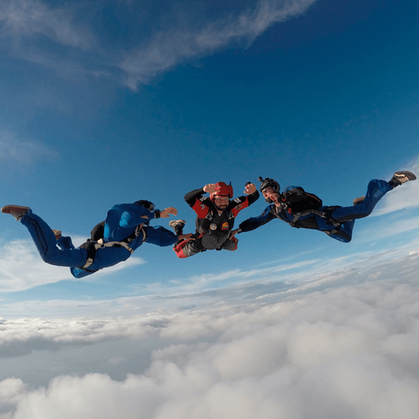
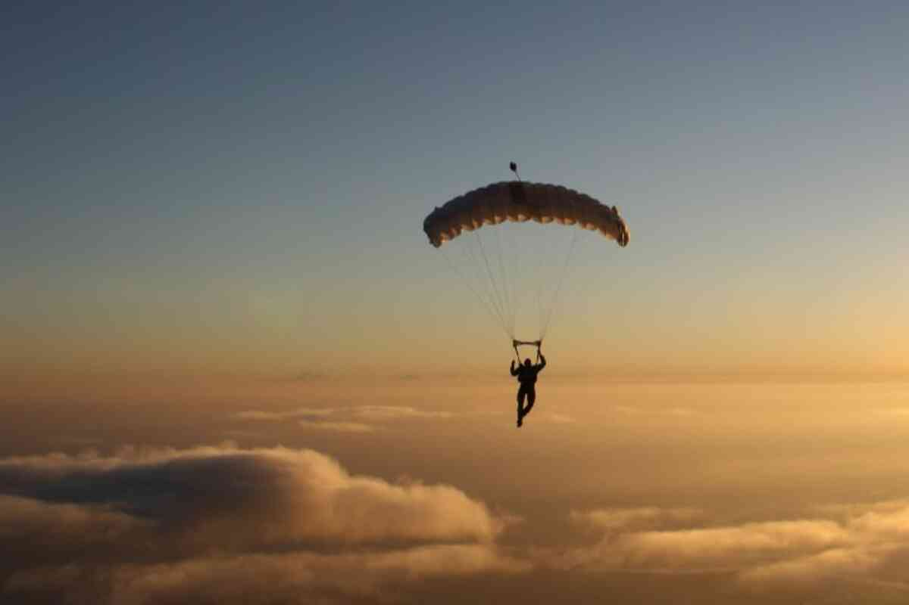

Paraquedismo
 Embarque na emocionante jornada de Daniel pelo mundo do paraquedismo, um esporte que se tornou sua paixão desde os primeiros saltos. No nosso site, compartilhamos os céus abertos que se tornaram seu playground, revelando a incrível experiência de voar em queda livre e a emoção de cada salto. De saltos solo a acrobacias no ar, explore conosco a adrenalina, coragem e alegria que o paraquedismo proporciona. Bem-vindo ao universo de Daniel, onde cada salto é uma história de liberdade e aventura no vasto horizonte dos céus!